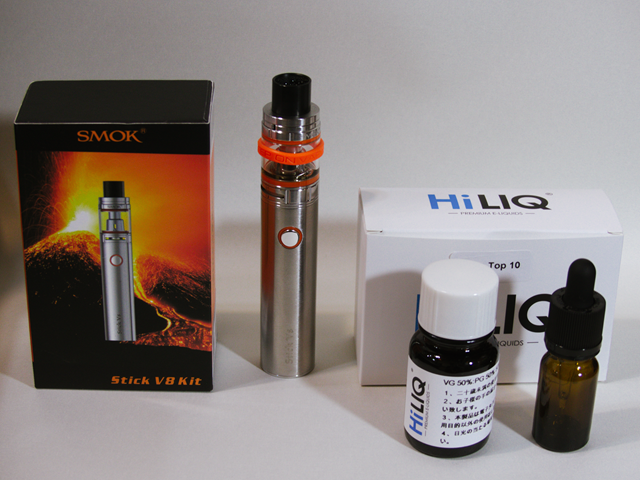
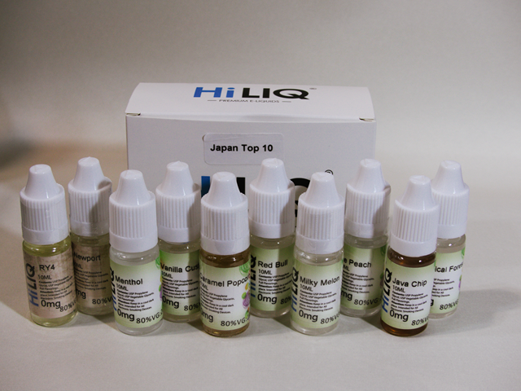
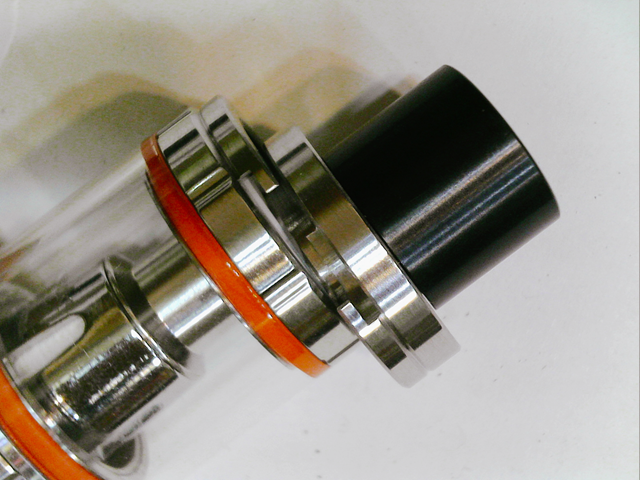
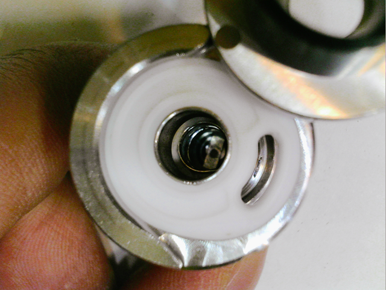
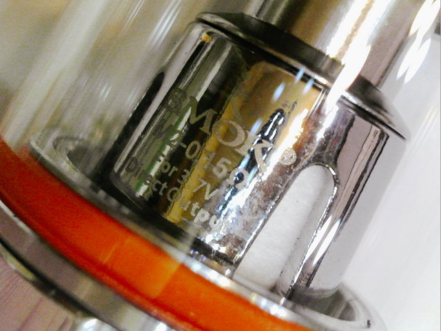
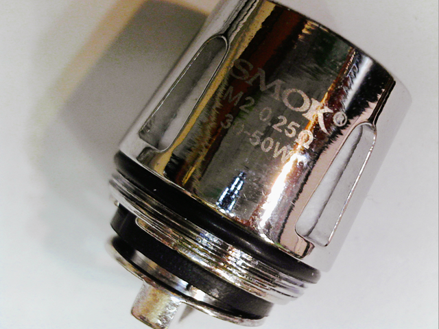
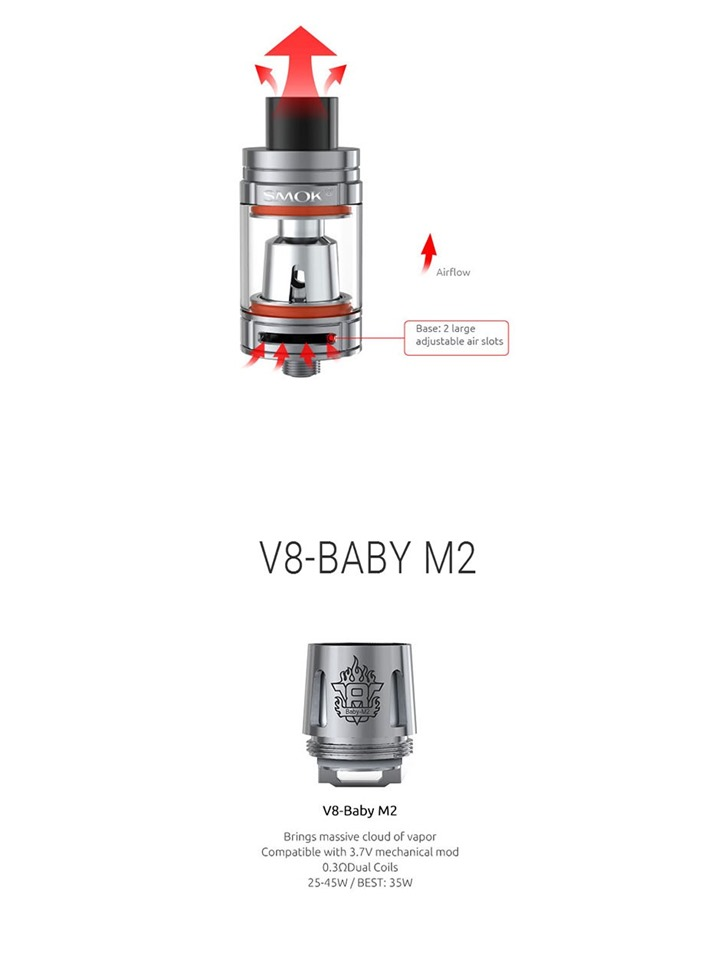

毎日、ゴールデンバット（タール15mg/ニコチン1.0mg 290円）を1箱吸っている自分がたばこをやめられるのかというリアルタイム日記です。喫煙暦は20年以上、完全にニコチン中毒です。
今は、たばこを絶ってから24時間が経過しました。以下のニコチン入りのVAPE というもので代用しています。以下の中央のが本体です。

最初に掛かったコストは、約8000円（送料込み）ほどです。（本体3384円＋ニコチンリキッドいろいろ4500円）自分の場合の1ヶ月のたばこ代よりも安いです。計算では1ヶ月あたり、ニコチン濃度の6mg/ml を1日あたり 2.5ml ほど吸うとして、約1600円（ニコチン入りリキッドとコイル代）ほどで運用できそうです。
機会があればタバコはやめたいなと思っていたのですが、ニコチン中毒はもはや20年以上になりまして、簡単にはやめられない状態なんですよね。
回りの喫煙者にも、iQOS(アイコス)にした人も多く煙もほとんど出ないしいいよねと思っていました。しかし、iQOS(アイコス)の葉っぱはタバコと同じ値段がします。だったら、いちばん安いゴールデンバットでも吸っていたほうがいいかとなり、なかなか踏み切れませんでした。
たばこをやめると言っても、健康的なものよりも、「臭い」や「ヤニ」、そしてそれが300円～500円も出して買うのが馬鹿らしいという点がやめたい主な理由です。なので、臭いや、ヤニがなく安いものがあればそれでいいのですが、そんなもの世の中にあるのですかね？
VAPE（ベイプ）というのがあるんですね。ベープじゃないですよ、ググってもらえばわかりますが簡単に要点を。
・香料入りの液体をコイルで熱して水蒸気を出す。
・それを吸引して、煙のトリックや香りを楽しむもの。
・主にアメリカでファッションやカルチャーとして定着
・液体にはニコチン入りのリキッドもある
・国内では薬事法の規制で販売はされていない
・ニコチン自体も個人輸入すれば入手可能（合法）
・それは、100ml 以内であれば問題なさそう
・すきな香りと味のリキッドにニコチンを入れればよいので、濃度調節も自由
・タールはなく、煙の実体は水蒸気なので部屋は臭くならず、ヤニも付かない
これは試してみるしかありません。最初は本体の代金が掛かりますが、「SMOK Stick V8 Kit 3000mAh」というタイプをゲット。アリエクで売っています。3200円ほどでした。仕様などの確認は以下のオフィシャルサイトでどうぞ。本体径は、24mm ありますので別途 RDA （Rebuildable Dripping Atomizer）と呼ばれるコイルとコットンなどをカスタマイズする世界にも出かけられます。値段も手ごろですし、最初の一本にはちょうどいいかななと。シルバーがなぜか安かったです。なぜか、日本でのレビューはほとんどありません。
スモック(SMOK)オフィシャルサイト
リキッドとニコチンは、HiLIQというサイトで購入。こちらもググればたくさん出てきますので省略。どのリキッドが好みかまったくわかりませんので、日本でのTOP１０本入りをゲット。10ml のボトルが10本入っていました。

これはニコチン入り（濃度選択可能）とニコチンなしのが選べます。最初よくわからず、ニコチンなしのを買って、ニコチンは別途買いましたが、喫煙者はニコチン入りを選んだほうが混ぜなくていいのでベターです。
んで、このリキッドを本体の上から入れます。

真ん中に見えるのは、電熱線のコイルで液体は横の穴から入れます。

このセットにはコイルが2種類あって、最初に装着してあるのは0.15Ωです。

別途、0.25Ωも入っています。白い部分はコットンで液体がコイルに触って水蒸気になる感じ。

このコイルは、V8-BABY M2 というタイプのようです。

ニコチンは劇薬なので、取り扱いは注意してリキッドに適量混ぜます。最初は、Java Chip というチョコレート系の甘めのを選択。
たばことは吸った感じはもちろん違いますが、自分の場合、タバコが吸いたいなーとなる間隔は、約1時間くらいで、何かに集中していたとしても、限界は2時間くらいです。
最初に吸ったときの感想は、「想像よりも煙（水蒸気ですが）がたくさん出る」のでびっくり。すこし蒸せました。本題は、ニコチン入りなのでたばこを吸いたいのがどのくらい我慢できるか気になります。
1回の吸引は、タバコを吸っているときで約3分くらいです。VAPE の場合は、1本を吸いきるという感覚はないので２，３分適当に吸って過ごしていると30分ほど経過したところで、タバコ吸いたい欲求が出てきました。また同じように VAPE を吸います。
なんかリアルタバコとは違いますので、最初の内はちょっと物足りない感じがします。タールが影響しているのでしょうかね。ニコチンは吸収されているので、その中毒は緩和されているのは確実です。
２，３時間これを繰り返している間、タバコは吸っていません。ちょっと映画でも見てみることにしました。当然、途中で吸いたい欲求は出ますのでまた VAPE を吸います。
その日は、疲れていたので映画見たら寝ました。翌日、朝ごはんを食べてからいつものように喫煙タイム。本日も VAPE です。タバコを吸わなくなってから、20時間は経過しています。喫煙者はよくわかる話ですが、食後の一服や、コーヒータイムの一服などはもはや慣習化されていて、ここを乗り越えられるかどうかが最大の山場なのです。
さて、いつものようにコーヒーを飲みながら、タバコの変わりにVAPE を。JavaChip のチョコレートっぽい甘い臭いがコーヒーとよく会います。
こんなにタバコを吸わなかったことは、インフルエンザで熱にうなされていたとき以来初めてです！！
この記事はリアルタイムで書いていますが、ちょこちょこと VAPE を吸っています。だんだん吸い方にも慣れてきて、0.5秒から1秒ほどボタンを押して直接、肺に入れてゆっくり吐き出します。
タバコはまだ2箱残っていますが、とりあえずそのまま吸わずに済みそうです。5mリットルのタンクの半分入れた状態から約1日は持ちました。1日、2～3mリットルくらい自分の場合は吸うようです。
250ml のリキッドが US$14.99 で売っていますので、1日3ml 消費するとして、83日は持ちそうです。約3ヶ月。内訳を見ると以下のようです。
・送料 19.44$ (Fedex)
・250ml リキッド（ニコチンなし）14.99$
・ニコチンベース液 3.39$
・値引き 10% 1.84$
———————————
約 36ドルで約4000円としましょうか。（レートは、CNY から換算されるようです）
ニコチン濃度は、約6mg/ml で、自分の場合1日 2.5ml 消費するとして、1ヶ月あたり1300円ほどですかね。だんだんと薄くしていきたいと思います。かなり安く喫煙できます。コイル（SMOK V8-Baby M2 Core 0.15ohm & 0.25ohm）は、1ヶ月に1回交換するとして5個いりで1500円ほどですので、1個300円です。こちらも コイル自体を自分で巻く手法もありさらに抑えることも可能です。
ニコチン濃度計算
30ml くらいづつ作る感じでとりあえず運用してみようかと思います。濃度は、6mg/ml くらいが喫煙者（セブンスターとかゴールデンバットとかタール15mg/ニコチン1.0mg 吸っていた方）の場合、ちょうどいい感じだと思います。
さて、2日目は Newport というのを吸っていますが、1日目の Javachip より好みです。これはメンソール系で、自分はメンソールはあまり好きではなかったのですが、VAPE のはいい感じです。簡単に表現すると、ちょっとメンソール感があるナッツ風味です。
30時間経過しましたが、ニコチン入りの VAPE 吸っているかぎりタバコは吸いたくなる感覚はいまのところありません。これはかなりすごいことです。食後タイムもコーヒータイムも無事乗り越えられています。何より丸一日以上、タバコを吸っていないことが信じられません。
ニコチンが摂取されているからなのでしょうが、あの煙たいのから開放されるのは非常にありがたいです。喫煙者でもあの煙はあまり好きになれるものではありません。
1週間経過したら、たぶん本当にやめられるのは確信できそうです。
また追って報告いたします。